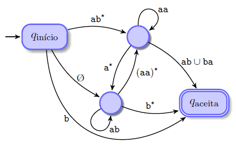
Chapter 1 — Introduction
Graphs are present in much of what concerns computer science. They are a perfectly computable abstraction for a large part of the relations of reality and of human imagination.
Conceptually, a graph is composed of a discrete set of elements that represent the existence of something material or imaginary. These elements are related; there is a rule, or a set of rules, logically defining these relations. In other words, the elements of the discrete set in question are interconnected by relations with a well-defined incidence pattern, and these relations are part of the graph — they are expressed by edges, while the interconnected elements are expressed by vertices.
You may ask for clarification: by the way, what exactly does this mean? What is the practical application of all this? To answer these questions, it is convenient to first get to know some formalisms about graphs. The conception of this universe of ideas with vertices and edges is the role of a mathematical theory foreshadowed by Leonhard Euler in 1736, in his paper on the problem of the 7 bridges of Königsberg. It is called graph theory.
Basically, graph theory deals with relations between elements of discrete sets. It is widely used in algorithms to abstract objects of the real or imaginary world that are interrelated in some way.
Chapter 2 — Mathematical theory of graphs
2.1 Elements of a graph
A graph consists of a set of vertices, a set of edges and an incidence function.
- The vertices are elements, interrelated in some way, belonging to a discrete (countable) set.
- The edges are elements of a discrete set that describe, in some way, the relations between the vertices of the graph.
- The incidence function is a function that maps, for each edge of the graph, a pair of vertices involved in the relation.
Graphs are usually represented graphically by diagrams, where the vertices are points and the edges are lines (or arrows, in the case of digraphs) connecting the points of the respective vertices involved in the relation.
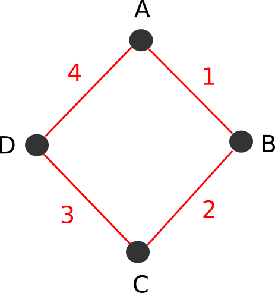
In the graph of the figure above, we have a set of vertices VG = {A, B, C, D}, and a set of edges aG = {1, 2, 3, 4}. The incidence function ΨG maps the relations of the set of edges as follows:
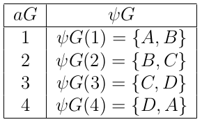
These elements of the graph can have several interpretations. If we were representing a city map, the vertices could be the houses and the edges could be the two-way roads that connect these houses. In another example: if we were representing a social network, the vertices could be people and the edges could be the friendships between them. Note that in both cases the relations are mutual.
- In the social network example: if there is a friendship between two people, then both know each other and consider each other friends.
- In the map example: if there is a two-way road connecting two houses, any vehicle can move to either of the two houses through this road.
However, there are cases in which the relations of the graph are not mutual. If we were, for example, representing a map (similar to the map of the previous example) with one-way streets (where vehicles can only move in one direction), the idea of a mutual relation in the graph would no longer work. Another example: if we were representing a social network such as Twitter or Instagram, in which friendships are replaced by “follower” and “followed” relations (and a person is not obliged to follow their followers), the idea of a mutual relation in the graph would not work either.
2.2 Digraphs
The fact that it may be necessary to represent non-mutual relations with graphs justifies the existence of two categories of graphs:
- Undirected graphs: graphs whose edges represent mutual relations.
- Directed graphs (also called digraphs): graphs whose edges have a defined direction and represent relations that are not necessarily mutual.
In the graphical representation of a digraph, the edges are represented as arrows indicating one or two directions, instead of lines.
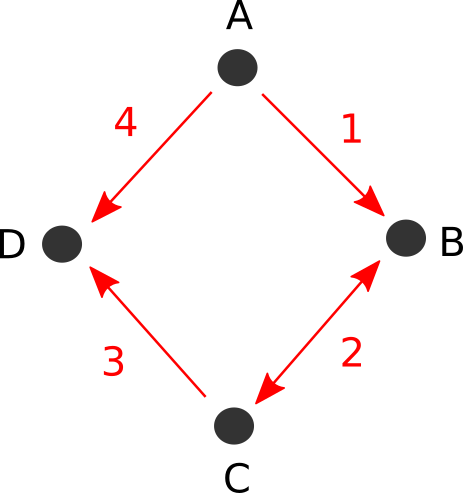
It is possible to represent a map with one-way roads, or a social network such as Twitter or Instagram, using a digraph, because of their relations, which are not necessarily mutual.
2.3 Weighted graphs
Weighted graphs are graphs whose edges have weights. They are used to represent some scalar characteristic of the corresponding relation.
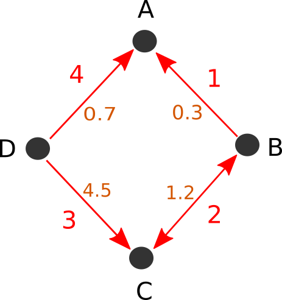
The weights can be used to indicate a measure of cost or magnitude of the incidence of the corresponding relation. In the city map example, the weights can represent the length of the roads, the difficulty of moving along the road, or a product of these two factors.
2.4 Null graphs
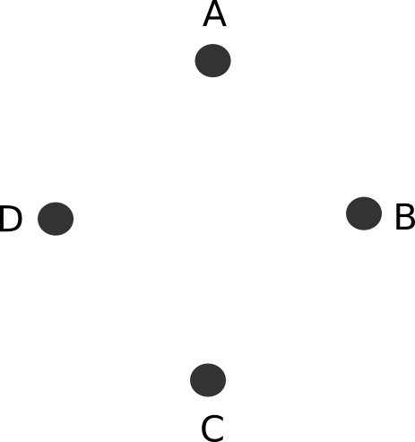
By definition, a graph is null when it has no edges (even if it has vertices).
2.5 Complete graphs
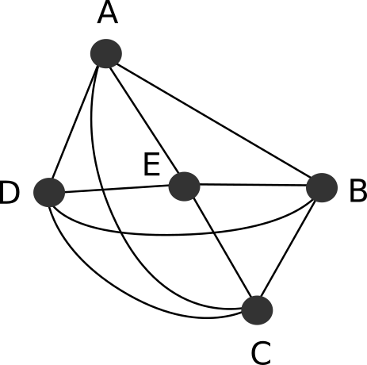
By definition, a graph is complete when all its possible pairs of vertices are connected by an edge.
2.6 Regular graphs
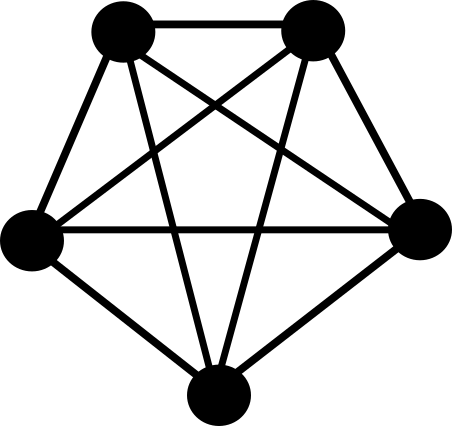
By definition, a graph is k-regular when all its vertices are connected by the same number k of edges. In other words, if all the vertices of the graph have the same degree k, the graph is k-regular (of degree k).
2.7 Subgraphs
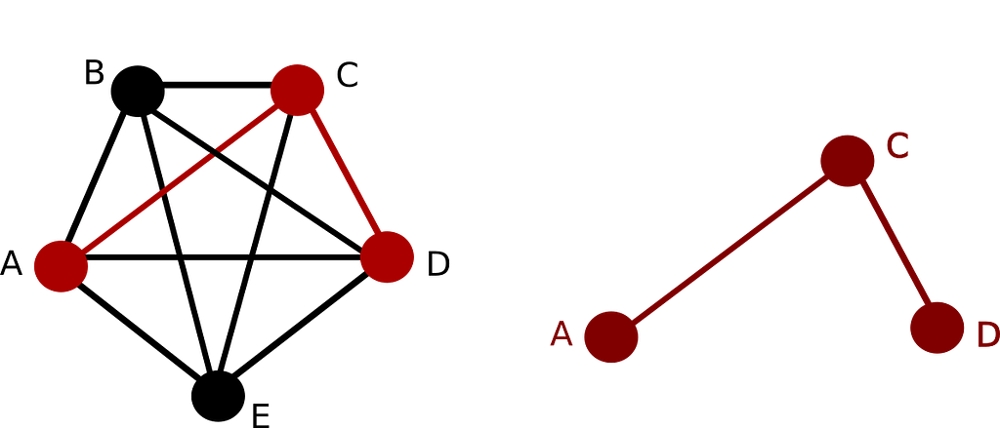
The concept of subgraph is analogous to the definition of subset. Suppose that, in the image above, the graph on the left is G and the graph on the right is H. When a graph H is contained in a graph G, it is said that H is a subgraph of G. In other words: if the set of vertices of H is a subset of the vertices of G, the set of edges of H is a subset of the edges of G, and these vertices are interconnected in H in the same way as they are in G, then H is a subgraph of G.
2.8 Loops
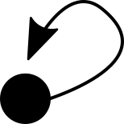
By definition, an edge that connects a vertex to itself is called a loop.
2.9 Cycles
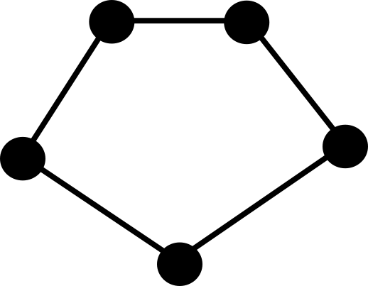
A cycle is a graph where all possible pairs of vertices are connected by an edge, and all vertices have 2 connections. In other words, a connected graph of degree 2 is, by definition, a cycle.
A graph that has one or more cycles in its subgraphs is characterized by forming paths through which it is possible to return to the starting vertex. It is necessary to be careful with this kind of graph in programming, because cycles can be problematic for some algorithms.
Chapter 3 — Data structures
3.1 Data structures
Data structures (DSs) — which are the subject of this chapter — are basically particular ways of organizing data in the memory of a computer. It is quite common for data organizations composed of elements of discrete sets and relations to be used in computer programs. Algorithms such as linked lists and binary trees use this logic to group data scattered in the memory of the computer so that it can be manipulated with some efficiency.
3.2 Models
Creating a computer program is a process, and some steps of this process happen before coding. In general, a program conception phase should precede coding, and this phase can be carried out in several ways: it can be performed by a software engineer, by a scientist, or by the programmer themself, and it can have a record — a list of requirements, a diagram, a flowchart or even a representation in mathematical language.
The program conception phase may involve designing a schematic and easy-to-understand representation of what should be implemented in the coding phase — the model. Here we move from a tedious, purely theoretical approach to something more “tangible”: for a good part of the algorithms that deal with what we call data structures, the models are, basically, graphs.
3.3 About not very formal terms
When it comes to algorithms and computer programming, what is known as a “vertex” or an “edge” in graph theory is usually called a “node”, “item” or “element”, especially since the theory is only an abstraction of practice, and these applications do not need to fully match the mathematical definitions of graphs. In this text, the term “element” will often be used to refer to something that can be a vertex or an edge of a graph.
3.4 Basic DSs — Linked Lists and Trees
There are two graph-based algorithm models that are very common in computer programming:
- Linked lists are often used to create linear dynamic arrays of elements. This DS model allows data to be grouped in an arrangement that supports insertions and removals of elements at low computational cost.
- Trees are often used to create non-linear dynamic arrays of elements. This model allows data to be grouped with a defined ordering rule, supporting insertions and removals of elements at low cost. Some variations of trees can also be used to organize families of data (this is what happens, for example, in a file and directory system).
These two DS models are very well known and widely used, practically regarded as basic concepts of computer science, and their applications generally do not require major reinventions, only small adaptations. Both have several implementations available to the public, which can be easily found with quick searches on Google or GitHub.
These models are not the only possible ones, nor the only necessary ones. As versatile as they are, sometimes a radical change in the way they are implemented or applied is — yes — necessary. There are also cases in which it is necessary to use a less common and more specific model for a given application, or even to create a new model.
3.5 Linked list
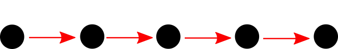
A linked list is a linear data structure. In it, the elements of the set are associated by “next” or “previous” relations, with the intention of creating a kind of imaginary row.
3.6 Tree
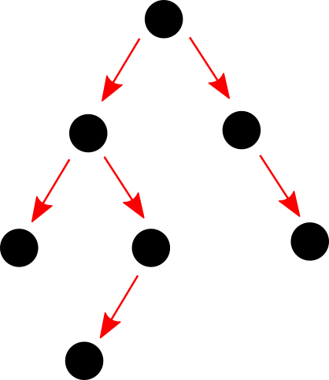
Trees are non-linear data structures, in which the elements are usually associated by relations such as “left”, “right”, “lower”, “upper”, “parent”, “child”, “smaller”, “greater”, etc. These structures form connected and acyclic graphs. When represented graphically, they form diagrams that resemble the physical structure of a tree (from nature), with forking branches.
Chapter 4 — Vertices and edges in data structures
4.1 Records, objects and references
In data structures such as linked lists and trees, the vertices of the model are usually implemented as records or objects, containing the information of the corresponding element. Inside these records or objects, there are usually references to other elements of the same set: these references play the role of the edges of the graph.
class ListNode:
def __init__(self, data):
self.data = data
self.next = None
def insert(self, node):
node.next = self.next
self.next = node
#Building the list 'Filipe'->'Chagas'->'Ferraz'
lst = ListNode('Filipe')
lst.insert(ListNode('Ferraz'))
lst.insert(ListNode('Chagas'))Note that, in the algorithm shown above, the ListNode class defines the standard structure of the elements of the linked list. This class has two attributes: data and next. The data attribute must contain any piece of information (such as my name), and the next attribute must contain a reference to the ListNode object of the adjacent element (or None, if there is no adjacent element).
4.2 Adjacency lists
Programming graphs outside the molds of linked lists and trees using arrays/records/classes and references is not always convenient. Another simple way to represent a graph in lines of code is to create a structure that contains an adjacency list for each vertex of the graph.

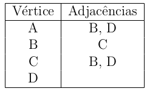
graph = {
'A': ['B', 'D'],
'B': ['C'],
'C': ['B','D'],
'D': []
}In this algorithm, a dictionary was created with an adjacency list for each vertex of the graph.
The dictionary is a feature of the Python language that makes our work much easier, since it allows the adjacency lists to be indexed with strings instead of natural numbers, but this does not mean that this programming technique cannot be reproduced in other languages.
#include <map>
#include <vector>
int main()
{
std::map<char, std::vector<char>> graph;
graph['A'] = {'B', 'D'};
graph['B'] = {'C'};
graph['C'] = {'B', 'D'};
graph['D'] = {};
return 0;
}Chapter 5 — Searching for specific elements in graphs
Imagine a situation in which, while dealing with a collection of data scattered in the memory of the computer, it is necessary to obtain one or more elements of this collection that match a certain pattern. This is, categorically, a search problem, and there are two well-known ways to solve it in the computational scope of graphs: depth-first search and breadth-first search. Both solutions will be explained.
5.1 Depth-first search
Depth-first search is a strategy used to search for specific elements in graphs. This technique makes use of recursive functions, and works very well with tree graphs.
The recursive search function must perform the following process:
1 — Get the element received as an argument
2 — Check whether the element obtained is the element being searched for:
- If it is, the current scope of the recursive function must return this element
- If it is not, the process continues
3 — Get the adjacent elements of the element received as an argument
4 — For each of the adjacent elements, make a recursive call passing the respective element as an argument
5 — Check whether any of the recursive calls returned the element being searched for:
- If so, the current scope of the recursive function must return this element
- If not, the current scope of the recursive function must return a value indicating that the element being searched for was not found.
For a tree graph G, consider a depth-first search function R = b(E), where E is an element (vertex) of the tree and R is the element that b(E) returned. The procedure of R = b(E) can be described with the following flowchart:
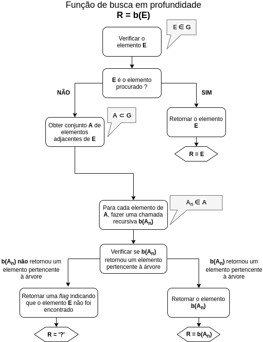
For demonstration purposes, consider that we are working with a tree formed by objects of a class called TreeNode, with the following attributes:
- name: contains the name of a person;
- id: contains the identification number of the person;
- smaller: contains a reference to another object with a smaller identification number (or None, if there is no adjacency);
- greater: contains a reference to another object with a greater identification number (or None, if there is no adjacency).
The TreeNode class also has a method called insert, which inserts new objects into the tree recursively, and a method called print_info, which prints in the prompt a message with the values contained in the object for the name and id attributes.
See, in the next algorithm, a possible implementation of this class.
class TreeNode:
# Class constructor
def __init__(self, name, id):
self.name = name
self.id = id
self.smaller = None
self.greater = None
# Insert new elements into the tree
def insert(self, node):
if node.id < self.id:
if self.smaller == None:
self.smaller = node
else:
self.smaller.insert(node)
elif node.id > self.id:
if self.greater == None:
self.greater = node
else:
self.greater.insert(node)
else:
print('Error: repeated id')
# Print information about the element
def print_info(self):
print('id and name:')
print(self.id)
print(self.name)
#End of the TreeNode classWe can easily create an algorithm that accesses all the elements of this tree using a recursive function. See the following example.
def traverse_tree(node):
if node <> None:
traverse_tree(node.smaller)
node.print_info()
traverse_tree(node.greater)The traverse_tree function invokes the print_info method for each of the objects of the tree, and a list with all the names and ids of the tree is printed (with the ids in ascending order).
It is possible to create a recursive function that searches for a certain value in the tree and returns the TreeNode object where the value was found.
def search(node, name):
if node <> None:
if node.name == name:
return node
else:
received = search(node.smaller, name)
if received <> None:
return received
else:
received = search(node.greater, name)
if received <> None:
return received
else:
return None
else:
return NoneWhen the search function is invoked, receiving as arguments the root of the tree and a name contained in one of its elements, a depth-first search is performed on the tree, and the object in which the name was found is returned. When the name is not found in the tree, the function returns None.
Depth-first search goes through the elements of the tree “from top to bottom” (or “from bottom to top”), in sequences of increasing or decreasing depth. When an element of the tree is accessed and its evaluation by the search is finished, before checking the other elements of the same level of the tree, the algorithm goes through the elements of lower or higher depth. This “dive” into the levels of the tree (which usually happens several times in a search) ends when, in one of its recursive calls, the function reaches an end of the tree.
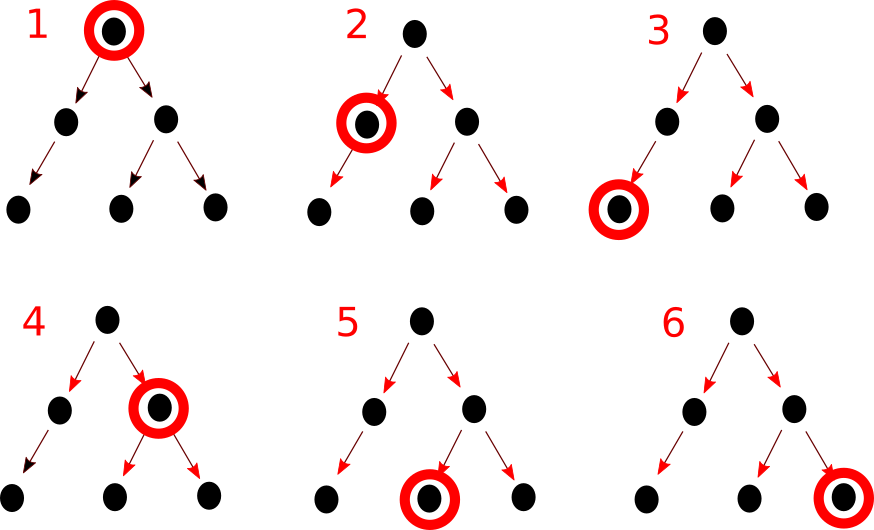
However, if this technique is applied to a graph that contains cycles, the recursion will enter a chain of repeated accesses to certain objects of the structure and, eventually, a failure known as stack overflow will occur. In these cases, it is necessary to use some device to “mark” the objects that have already been accessed during the search, so that the algorithm does not check an object more than once during the search.
5.2 Breadth-first search
Breadth-first search is a graph search strategy in which, after checking an element of the graph, all the adjacent elements are obtained and checked. This strategy does not have the same problem as depth-first search regarding cyclic graphs, although it also has some weaknesses that will be mentioned later.
The device used to perform breadth-first search is a queue algorithm. After the first element of the graph is checked, all the adjacent elements are obtained and inserted into the queue. The execution of the algorithm continues in successive repetitions of the following process:
1 — Get (and remove from the queue) the element that has been in the queue the longest
2 — Check whether the element obtained is the element being searched for:
- If it is, the succession of repetitions ends
- If it is not, the process continues
3 — Get the adjacent elements of the last element obtained
4 — Insert all the adjacent elements obtained into the queue
For a graph G, consider a breadth-first search function R = b(E), where E is an element (vertex) of the graph and R is the element that b(E) returned. The procedure of R = b(E) can be described with the following flowchart:
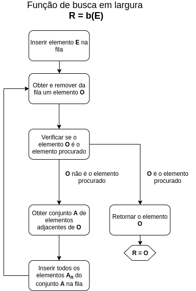
To demonstrate this technique, a breadth-first search algorithm will be presented for the following digraph:
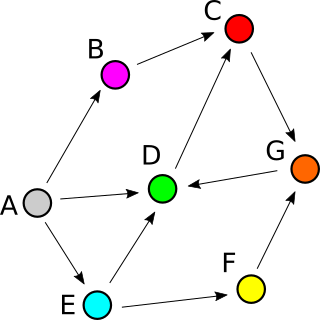
This digraph was implemented with a class called Element, which has the following attributes:
- Color: contains the color of the element in the graph.
- Adjacencies: contains a list of adjacent elements.
class Element:
def __init__(self, color):
self.color = color
self.adjacencies = []
#Elements of the graph
A = Element('Gray')
B = Element('Pink')
C = Element('Red')
D = Element('Green')
E = Element('Blue')
F = Element('Yellow')
G = Element('Orange')
#Adjacency lists
A.adjacencies = [B, D, E]
B.adjacencies = [C]
C.adjacencies = [G]
D.adjacencies = [C]
E.adjacencies = [D, F]
F.adjacencies = [G]
G.adjacencies = [D]It is possible to implement a function to search (using a breadth-first search) for the element of a certain color in the graph as follows:
def search (e_start, color):
queue = [e_start]
while len(queue) > 0:
#Get an object from the queue
e_current = queue.pop()
if e_current.color == color:
#Found!!
return e_current
else:
#Insert adjacencies into the queue
for e_adjacent in e_current.adjacencies:
queue.insert(0, e_adjacent)
#Not found
return NoneThe search function, of the algorithm above, must receive as arguments any Element object of the graph (from which the search will start) and the color of the element being searched for.
However, this implementation has two problems:
1 — If the element being searched for does not exist in the graph, the procedure will enter an infinite loop, causing the application to freeze.
2 — If the graph is cyclic, objects (which have already been checked) will possibly be reinserted into the queue, which is unnecessary and implies a waste of memory.
These two problems can be fixed if, in the implementation of the search function, the following rule is defined:
An object can only be inserted into the queue if:
1 — It has not been checked yet;
2 — It is not in the queue waiting to be checked.
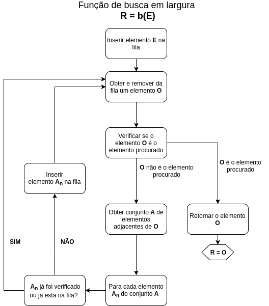
The first condition of the rule can be implemented if all checked objects are inserted into a list. In this case, it is possible to know whether an object has already been checked by verifying whether it is contained in this list.
def search (color, e_start):
queue = [e_start]
checked = []
while len(queue) > 0:
#Get object from the queue to be checked
e_current = queue.pop()
checked.append(e_current)
#Check object
if e_current.color == color:
#Found!!
return e_current
else:
#Insert adjacencies into the queue
for e_adjacent in e_current.adjacencies:
if ((e_adjacent not in checked)
and (e_adjacent not in queue)):
queue.insert(0, e_adjacent)
#Not found
return None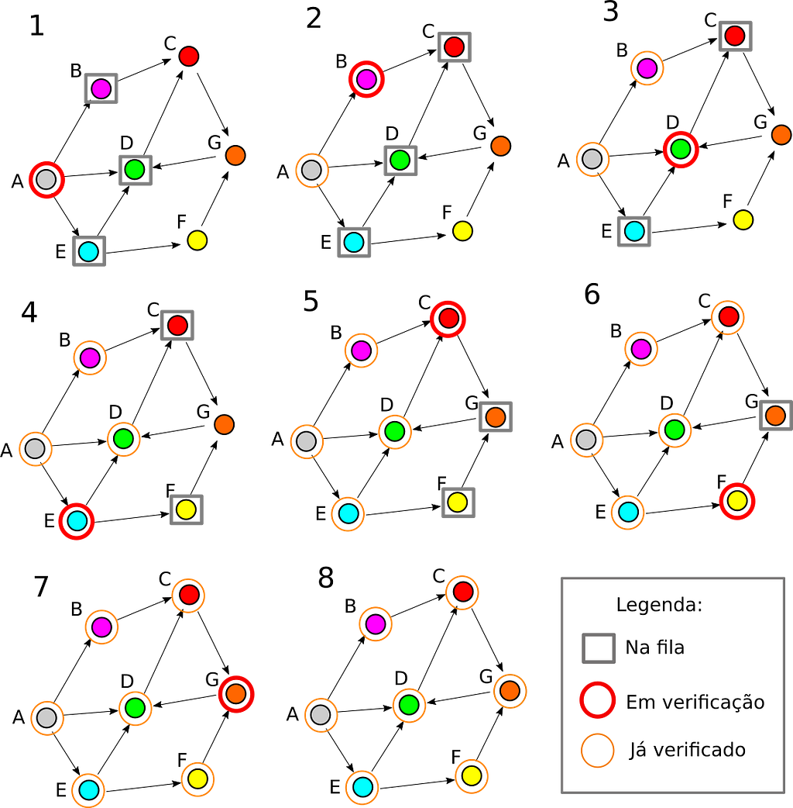
Chapter 6 — Shortest path problem
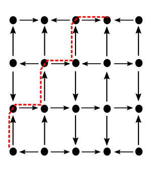
To open the chapter, an everyday situation will be illustrated: imagine that you, reader, are leaving work or college after a long and rainy day. The storm, which all afternoon stunned you with the noise of loud thunder and gusts of wind, left at the end of the day some traces of destruction scattered around the city: it caused floods, accidents, fallen trees and the obstruction of many public roads. All this inconvenience culminated in long traffic jams on the main avenues of the city (which you usually take on your way home). The traffic is terrible!
Afraid of spending hours in slow traffic jams on the way home, you take action before leaving: you look for and install an app on your smartphone that will determine the fastest way home. When you open the app, a service identifies your location through GPS, gets the traffic information for the region, asks you to specify a destination and, finally, determines the route you should follow with your car to get home without wasting much time in traffic jams.
Problem solved! The shortest path between your current location and your home was found by a path-finding algorithm, and now you can go home calmly.
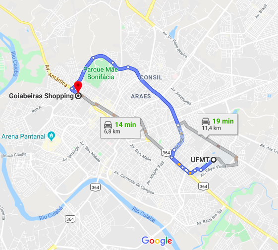
This is one of the problems that can be solved using graph search algorithms: the shortest path problem (also known as path-finding). Solving this problem consists of finding the shortest or least costly path from one vertex of the graph to another. There are several path-finding algorithms, and this chapter briefly covers two of them: Dijkstra's algorithm and the A* (A-star) algorithm.
6.1 Dijkstra's algorithm
Dijkstra's algorithm, like any path-finding algorithm, must receive two parameters before starting the search: an initial element and a final element of the graph. The algorithm must respond with a linked list made up of the elements of the graph contained in the shortest path between the initial element and the final element.
Consider the representation of Dijkstra's algorithm as a function C = dijkstra(Vi, Vf), where:
- Vi is the initial vertex element of the path.
- Vf is the final vertex element of the path.
- C is the shortest path between Vi and Vf.
The implementation of Dijkstra's algorithm resembles in some aspects the implementation of a depth-first search. Like depth-first search, Dijkstra's algorithm is an iterative algorithm, that is, it performs the search in a long repetitive process. In contrast to depth-first search, Dijkstra's algorithm uses a priority queue instead of a simple queue. The priority queue is a data grouping structure in which each element is associated with a numerical value called a key. The order in which the elements of the priority queue are obtained and removed follows the key value of each of these elements. In Dijkstra's algorithm, the iterations get vertices of the graph and calculate their distances (or cumulative cost) to the origin vertex Vi until the final vertex Vf is found. Each time a vertex is obtained and has its distance to Vi calculated, it is inserted into the priority queue, and its distance to Vi is used as the key. This is where the priority queue comes in: at each iteration, to get the next vertices of the graph to be analyzed, the algorithm looks for the vertex in the queue with the smallest key (that is, the smallest distance to Vi) and gets its adjacent vertices to process. With the help of a set of linked list operations, a sequence of nodes containing vertices is generated throughout the execution of the algorithm and linked according to the adjacencies of the vertices. At the end of the execution of the algorithm, when the vertex Vf is found, there will be a linked list corresponding to C (the shortest path between Vi and Vf).


6.2 A* algorithm
Dijkstra's algorithm is quite costly and may not be a viable solution in some situations because of the time it takes to give an answer. A less costly alternative to Dijkstra's algorithm is the A* (A-star) algorithm. This algorithm closely resembles Dijkstra's algorithm. The difference between the A* algorithm and Dijkstra's algorithm lies in the fact that the A* algorithm uses a heuristic to optimize the process of searching for the shortest path. This heuristic is basically an estimate of the distance from any vertex V of the graph to the final vertex Vf. In the A* algorithm, the keys of the vertices in the queue are calculated as the sum of the exact distance to Vi and the heuristic distance to Vf. Consequently, at each iteration, the algorithm will always pick for analysis the vertices that are probably closest to Vf, and will need to analyze fewer vertices than Dijkstra's algorithm to find the shortest path between Vi and Vf.
The less erratic the heuristic, the less costly the work of the algorithm.
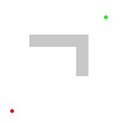

References
- Book: Grafos — Uma Introdução (Graphs — An Introduction), by Samuel Jurkiewicz.
- Chapter 3 of the book Artificial Intelligence, by Stuart Russell and Peter Norvig. Third edition, translated into Portuguese by Regina Célia Simille de Macedo. Publishers: Elsevier and Campus.